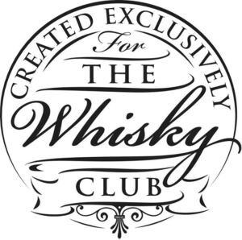

Trade Mark Journal No.2025/048 28 November 2025
WO0000001886273 (21,33,35,41,43)
Office of origin: Australia
Date of International Registration:28 August 2025
Date of designation in the UK:
28 August 2025

- Class 21
- Household or kitchen utensils and containers, namely, semi-worked glass (for household purposes), bottles sold empty, corkscrews, cocktail sticks, straws for drinking; salt and pepper shakers, pitchers, cocktail shakers; drinking glasses, cups, tumblers, goblets, flutes (drinking glasses); shot glasses; decanters; serving trays, barware, namely, beverage glassware; serving ware for serving food and drinks, being dishes, vessels, trays, plates, utensils; beverage trays; spice shakers; beverage stirrers, mixer bottles (empty), mixing bowls, mixing cups, and shakers; beverage coolers (containers); ice buckets; drink pourers; napkin holders; plastic and glass coasters; cocktail strainers; household containers for food and containers for household use; household drip stoppers for the necks of bottles and jars; bottle openers; cocktail stirrers; cups of paper or plastic; glass lids and stoppers; shaker bottles sold empty; ice cube molds; mixing glasses, drinking vessels; wine opener; bar tools, namely, strainers for household purposes, speed liquor pourers, ice accessories in the nature of ice buckets, and ice scoops (barware); flasks; saucers; tea strainers.
- Class 33
- Alcohol beverages, excluding beer; spirits; whisky; alcohol beverages which include whisky, excluding beer.
- Class 35
- Wholesale and retail services relating to foodstuff, non-alcoholic beverages and alcoholic beverages, clothing, footwear, headgear, keyrings, drinking vessels and barware, glassware, silverware [cutlery, forks and spoons], drinking cups, drinking flasks, drinking glasses, whisky glasses, drinking goblets, decanters, drinking straws, drinking vessels, tumblers [drinking vessels], drinking bottles, drinking horns, whisky stones, tableware, platters, beverageware, beverage stirrers, beverage glassware, cocktail shakers, coasters, leather coasters, ice scoops (barware), chilling containers, ice mould, ice tray, freezer tray, kitchen moulds, carrying cases for glassware, carrying cases for silverware, carrying cases for non-alcoholic beverages and alcoholic beverages, bar carts, drink carts, drink trolleys, bar stools, bar stands and plinths for non-alcoholic beverages and alcoholic beverages, display cases, cabinets and display shelves for non-alcoholic beverages and alcoholic beverages; online wholesale and retail services relating to foodstuff, non-alcoholic beverages, alcoholic beverages, clothing and clothing accessories, footwear, headgear, keyrings, drinking vessels and barware, glassware, silverware [cutlery, forks and spoons], drinking cups, drinking flasks, drinking glasses, whisky glasses, drinking goblets, decanters, drinking straws, drinking vessels, tumblers [drinking vessels], drinking bottles, drinking horns, whisky stones, tableware, platters, beverageware, beverage stirrers, beverage glassware, cocktail shakers, coasters, leather coasters, ice scoops (barware), chilling containers, ice mould, ice tray, freezer tray, kitchen moulds, carrying cases for glassware, carrying cases for silverware, carrying cases for non-alcoholic beverages and alcoholic beverages, bar carts, drink carts, drink trolleys, bar stools, bar stands and plinths for non-alcoholic beverages and alcoholic beverage, display cases, cabinets and display shelves for non-alcoholic beverages and alcoholic beverages; retail services related to beverages and food provided by mail order or via the global computer network; advertising services; business management and business consulting services, including the business management of franchises; business administration; business management; providing an online market for the buyer and seller of goods or services; arranging of competitions for advertising purposes.
- Class 41
- Club entertainment or education services, including whisky club services; education services; entertainment services.
- Class 43
- Services for the provision of beverages and food; whisky club services (provision of beverages and food).
The Whisky Club Company Pty Ltd
Representative: Davies Collison Cave Pty Ltd, Level 15,, 1 Nicholson Street, MELBOURNE VIC 3000, AUSTRALIA